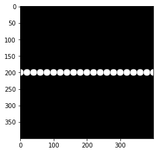
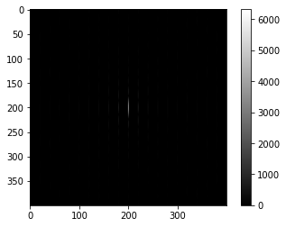
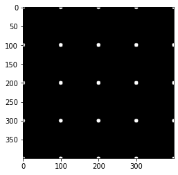
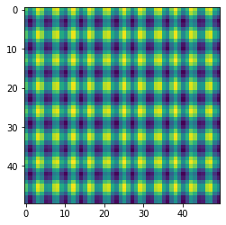
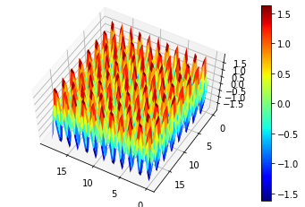

Generation of Simulated Images
by Joyita Bhattacharya
Akin to other coding activities, the first step is to import all the relevant libraries such as NumPy, Matplotlib after installing Python.
You can use either Jupyter notebook or Google Colab notebook for running the code. Running in Google Colab is relatively easy as it has pre-installed Python libraries.
Example 1: Generation of an image with circles forming a horizontal line at the center
Generate a box of the required dimension. Here, I have simulated a box of 400 X 400 dimensions with circles 10-unit radius placed at its center.
| Code | Output |
|---|---|
|  |
Fourier Transform
The output of the Fourier Transform of the image is shown below. A vertical streak at the center is observed which represents the horizontal circles in the real space. The codelines for Fourier trasform and the corresponding transformed image is displayed below.
| Code | Output |
|---|---|
|  |
Please click this link to read about Fourier transform in details.
Example 2: Generation of an image with circles forming square grid pattern
Generate a box of the required dimension. Here, I have simulated a box of 400 X 400 dimensions with circles 10-unit radius placed horizontally and vertically witha spacing of 100-unit forming square grid pattern.
| Code | Output |
|---|---|
|
 |
This image in the inverse or Fourier space looks like this 👇:
Note the narrow spacings between the circles in the Fourier space which is the inverse of that displayed in the real space image.
Functions and Images
Now I will demsonstate the simulation of 2D images from periodic functions. Additionally, I will also show how to generate their 3D counterparts.
Periodic function 1
Consider the below periodic function: Here is the code and the output for simulating 2D image.
| Code | Output |
|---|---|
|
 |
The code for generating the 3D version of the above image is displayed below:
| Code | Output |
|---|---|
|
 |
The 3D version distinctly depicts the sinusoidal characteristics of the image.
You can visit my GitHub link to see more number of examples related to image simulation.